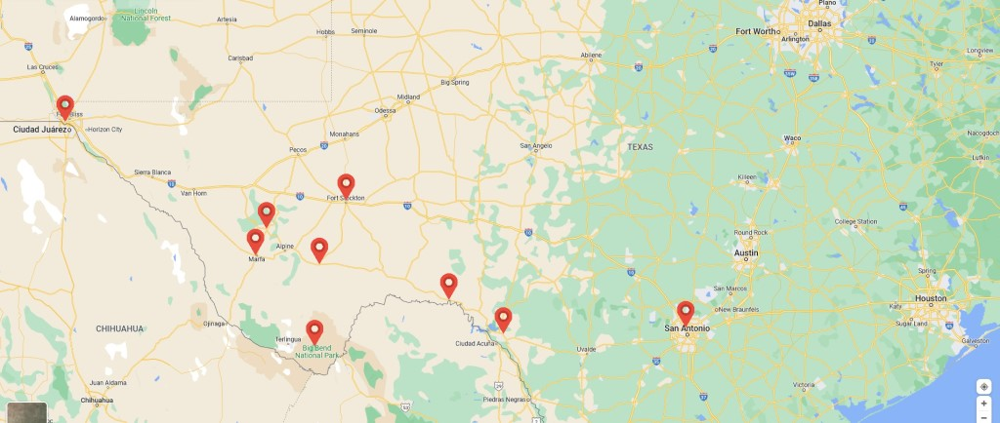
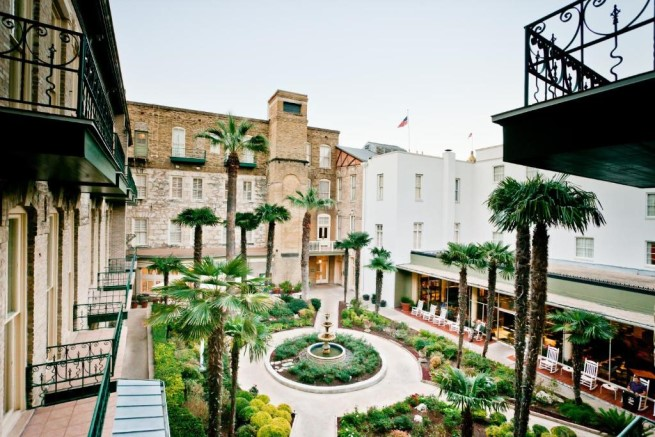
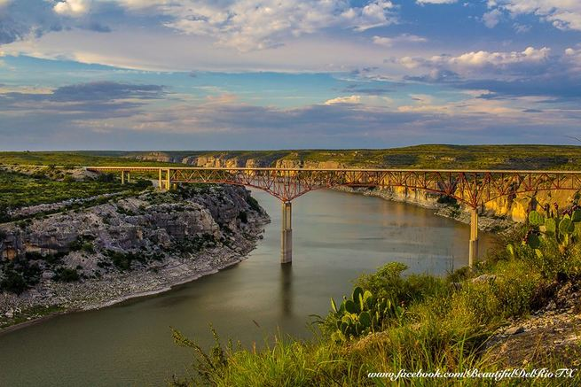
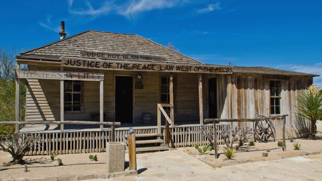
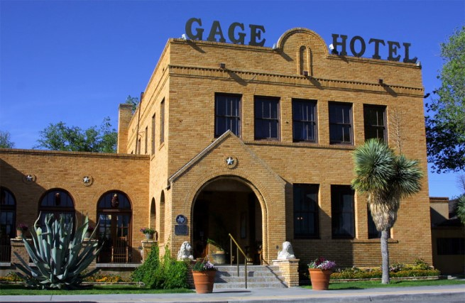
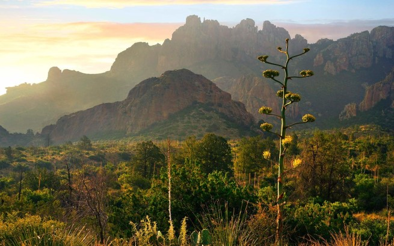
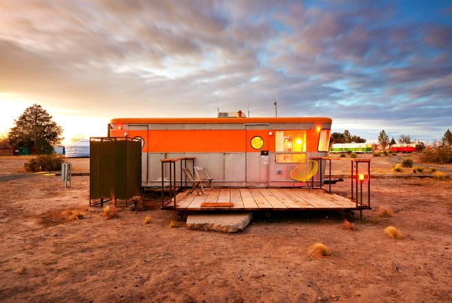
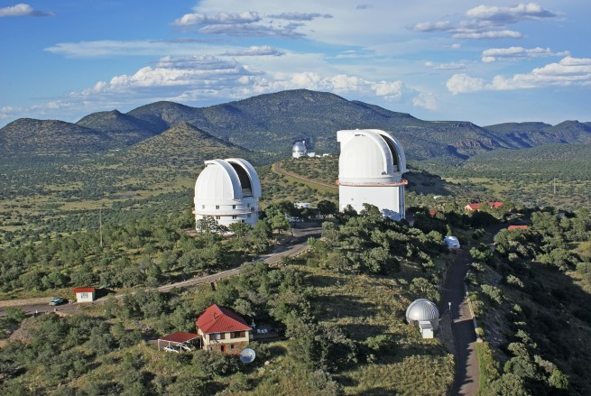
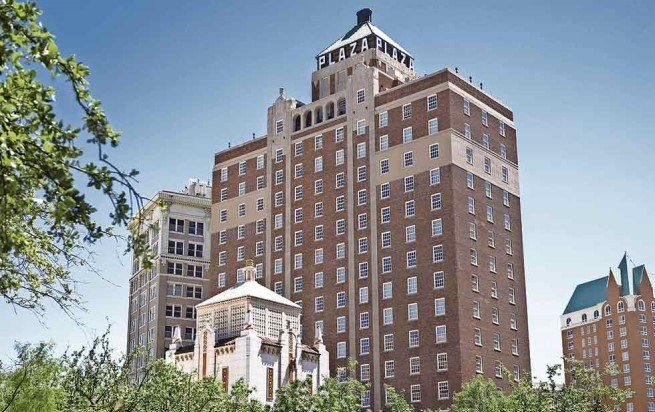

Places to see in the beautiful Chihuahuan Desert I've taken a few trips to West Texas, for work and play, most recently with my spouse. I'd like to share a few of the reasons I think this is a special place with you, along with pictures! To cross Texas from just east of Houston to El Paso is about the drive from St Louis to Denver.  The Menger Hotel Built in 1859, right next to the Spanish Mission (the "Alamo"), this boarding house has hosted Native Americans, presidents, poets, actors, generals, singers and the public of the world. One of my favorite spots is the cherry-wood bar modeled after the House of Lords Club taproom in London, which is touted as "The birthplace of Roosevelt's Roughriders." I prefer to think of it as an intimate little watering hole. The hotel has touches of luxury throughout, with marble floors and columns, ornate columns and banisters along with fancy wallpaper.  The beautiful courtyard, showing how the many additions weave together to make an interesting building. Photo courtesy of The Menger Hotel. Back to top Del Rio, Texas Del Rio sits in the Rio Grande River Valley, where the river takes its final turn southeast toward the Gulf of Mexico. The area is a bit of a watersport mecca, as Del Rio and her sister city in Mexico, Ciudad Acuña, sit at the confluence of the Rio Grande, Pecos River and Devils River. These waters have been dammed up to form the Amistad Reservoir, which along with all of the limestone cliffs and sparse vegetation provides beautiful backdrops for sunset photos. The bridges over Amistad may be longer, but my favorite is the short span over the Pecos River, with it's dramatic cliffs with caves in and sprinkling of nopales hanging on to the edge.  Bridge over the Pecos River along Highway 90. Photo courtesy of the "BeautifulDelRioTX" Facebook account. Back to top Langtry & Judge Roy Bean, Law West of the Pecos Langtry lies on Highway 90, west of Del Rio. In 1882 the Southern Pacific line established a grading camp near the Eagle Nest crossing of the Rio Grande to facilitate joining with the Galveston, Harrisburg and San Antonio Railway at Langtry. Roy Bean was a milk man in San Antonio, and (somehow?) was appointed Justice of the Peace for Precinct 6, which included Southern Pacific's new camp. The Texas Rangers felt he "had what it would take" to bring the law "West of the Pecos." Bean was a fan of Lillie Langtry, the popular East Coast singer/performer, and named his saloon "The Jersey Lilly" in her honor. The town may have been named after a railroad engineer, or Lillie. Take your pick! The saloon was where the "Judge" would hold court and occasionally put on plays.  The Jersey Lilly. Photo courtesy of Judy's Journey's on blogspot. Back to top Marathon & The Gage Hotel The town of Marathon, also established in 1882 along the railroad, is one of the gateways to the beautiful Big Bend parks (more on them shortly). Bordering Big Bend National Park, just 40 miles to the south, it's the closest town to the Park's north entrance. This small town of 386 residents has a grocery store, two gas stations and half a dozen restaurants, cafes and eateries. There is a variety of overnight lodging throughout town in the form of casitas, cottages, and unique local architecture. We decided to stay at the iconic Gage Hotel, built in 1927. It was the house of Alfred Gage, a banker and cattle rancher who started out in San Antonio before building one of the biggest ranches in the Trans-Pecos area.  The brick building, built in 1927, with it's luxury rooms. Photo courtesy of the Gage Hotel. Back to top Big Bend Parks Big Bend National Park has national significance as the largest protected area of Chihuahuan Desert in the United States, and was named after a large bend in the Rio Grande/Río Bravo. The park protects more than 1,200 species of plants, more than 450 species of birds, 56 species of reptiles and 75 species of mammals. Additional park activities include scenic drives, programs led by Big Bend park rangers and stargazing. The area has a rich cultural history, from archeological sites dating back nearly 10,000 years to more recent pioneers, ranchers and miners. The Chisos Mountains are located in the park, and are the only mountain range in the United States to be fully contained within the boundary of a national park. My favorite part is hiking through the oaks that were left behind in the cooler spots after the climate warmed and the large forests receded.  The beautiful courtyard, showing a couple versions of the hotel. Photo courtesy of Travel and Leisure. Back to top Marfa & El Cosmico Marfa is a city in the high desert of the Trans-Pecos in far West Texas, between the Davis Mountains and Big Bend National Park. It is the county seat of Presidio County, and its population as of the 2010 United States Census was 1,981. The city was founded in the early 1880s as a water stop; the population increased during World War II, but growth has stalled and reversed somewhat since the late 20th century. Today, Marfa is a tourist destination and a major center for minimalist art. Attractions include Building 98, the Chinati Foundation, artisan shops, historical architecture, a classic Texas town square, modern art installments, art galleries and the Marfa lights. We really enjoyed staying in the little pink camper at El Cosmico, a collection of tents, yurts and campers west of town. Swinging in the hammocks under mesquite trees and watching horned frogs eat ants was a special treat.  One of the many quirky accomodations at El Cosmico. Back to top McDonald Observatory & Chihuahuan Desert Nature Center and Botanical Gardens Just up Highway 17 from Marfa are places of interest to the scientific community, namely The University of Texas' McDonald Observatory and the Chihuahuan Desert Nature Center and Botanical Gardens at the Chihuahuan Desert Research Institute. McDonald Observatory is an astronomical observatory located on Mount Locke in the Davis Mountains of West Texas, with additional facilities on Mount Fowlkes, about a mile to the northeast. The observatory produces StarDate, a daily syndicated radio program consisting of short segments related to astronomy that airs on both National Public Radio and commercial radio stations. If you're around at night, they shoot lasers up to reflective mirrors on the moon to measure the distance. (It's slowly drifting away!) Chihuahuan Desert Nature Center and Botanical Gardens is a nonprofit nature center with botanical gardens on the grounds of the Chihuahuan Desert Research Institute. It is located off Texas State Highway 118 about 4 miles south of Fort Davis, Texas. The Nature Center includes grasslands, oak studded hillsides, mountains of volcanic origin, canyon springs and seasonal wetland pools in the Chihuahuan Desert. Some of the cacti in the Botanical Gardens may look furry and cuddly, but don't pet them!  The Otto Struve Telescope and Harlan J. Smith Telescope telescopes on Mt. Locke in the front, with the Hobby-Eberly Telescope telescope on Mt. Fowlkes in the back. Back to top Fort Stockton & Chile Verde To me, the quintessential food of West Texas is chile verde. Chile verde ('green chile') is a moderately to extremely spicy New Mexican stew or sauce usually made from chunks of pork that have been slow-cooked in chicken broth, garlic, green tomatillos and roasted green chile. The spiciness of the chile is adjusted by the use of various peppers: Hatch chile, poblano, jalapeño, serrano, and occasionally habanero. I have fond memories of stopping at a drive-thru taco joint in Ft. Stockton and picking up a couple before a long day in the field. Two was more than enough and they were oh-so-good. Shout out to Tacos OJ! So salty and spicy. Back to top The Plaza Hotel Pioneer Park The Plaza Hotel Pioneer Park has a history steeped in the heritage of El Paso, and its origins date to 1884, when Dr. Lucius Sheldon built an elegant masonry office building before converting it into a hotel in 1899. Brushes with history include serving as unofficial headquarters for participants in the Mexican Revolution (1910-1920). On April 9, 1929, the Sheldon Hotel burned down, and entrepreneur Conrad Hilton soon stepped in with plans for a taller, grander replacement. Despite the stock market crash and the Great Depression, construction continued. On November 6, 1930, the hotel opened as Hilton’s eighth property, with an Art Deco design featuring brick-and-concrete facade and a Spanish-tiled pyramidal crown that’s visible for miles. It marked the brand’s first high-rise, and stood as the tallest building in El Paso for more than 30 years. During much of this time, Conrad himself resided in the hotel. It was sold by Hilton in the 1960s, and operated per usual until being purchased and revitalized by local businessman Paul Foster.  The Plaza Hotel in El Paso. Back to top